<?xml version="1.0" encoding="utf-8"?>
<!DOCTYPE html PUBLIC "-//W3C//DTD XHTML 1.0 Strict//EN"
"http://www.w3.org/TR/xhtml1/DTD/xhtml1-strict.dtd">
<html xmlns="http://www.w3.org/1999/xhtml" lang="en" xml:lang="en">
<head>
<!-- 2021-07-14 周三 08:08 -->
<meta http-equiv="Content-Type" content="text/html;charset=utf-8" />
<meta name="viewport" content="width=device-width, initial-scale=1" />
<title>&lrm;</title>
<meta name="generator" content="Org mode" />
<style type="text/css">
 <!--/*--><![CDATA[/*><!--*/
  .title  { text-align: center;
             margin-bottom: .2em; }
  .subtitle { text-align: center;
              font-size: medium;
              font-weight: bold;
              margin-top:0; }
  .todo   { font-family: monospace; color: red; }
  .done   { font-family: monospace; color: green; }
  .priority { font-family: monospace; color: orange; }
  .tag    { background-color: #eee; font-family: monospace;
            padding: 2px; font-size: 80%; font-weight: normal; }
  .timestamp { color: #bebebe; }
  .timestamp-kwd { color: #5f9ea0; }
  .org-right  { margin-left: auto; margin-right: 0px;  text-align: right; }
  .org-left   { margin-left: 0px;  margin-right: auto; text-align: left; }
  .org-center { margin-left: auto; margin-right: auto; text-align: center; }
  .underline { text-decoration: underline; }
  #postamble p, #preamble p { font-size: 90%; margin: .2em; }
  p.verse { margin-left: 3%; }
  pre {
    border: 1px solid #ccc;
    box-shadow: 3px 3px 3px #eee;
    padding: 8pt;
    font-family: monospace;
    overflow: auto;
    margin: 1.2em;
  }
  pre.src {
    position: relative;
    overflow: visible;
    padding-top: 1.2em;
  }
  pre.src:before {
    display: none;
    position: absolute;
    background-color: white;
    top: -10px;
    right: 10px;
    padding: 3px;
    border: 1px solid black;
  }
  pre.src:hover:before { display: inline;}
  /* Languages per Org manual */
  pre.src-asymptote:before { content: 'Asymptote'; }
  pre.src-awk:before { content: 'Awk'; }
  pre.src-C:before { content: 'C'; }
  /* pre.src-C++ doesn't work in CSS */
  pre.src-clojure:before { content: 'Clojure'; }
  pre.src-css:before { content: 'CSS'; }
  pre.src-D:before { content: 'D'; }
  pre.src-ditaa:before { content: 'ditaa'; }
  pre.src-dot:before { content: 'Graphviz'; }
  pre.src-calc:before { content: 'Emacs Calc'; }
  pre.src-emacs-lisp:before { content: 'Emacs Lisp'; }
  pre.src-fortran:before { content: 'Fortran'; }
  pre.src-gnuplot:before { content: 'gnuplot'; }
  pre.src-haskell:before { content: 'Haskell'; }
  pre.src-hledger:before { content: 'hledger'; }
  pre.src-java:before { content: 'Java'; }
  pre.src-js:before { content: 'Javascript'; }
  pre.src-latex:before { content: 'LaTeX'; }
  pre.src-ledger:before { content: 'Ledger'; }
  pre.src-lisp:before { content: 'Lisp'; }
  pre.src-lilypond:before { content: 'Lilypond'; }
  pre.src-lua:before { content: 'Lua'; }
  pre.src-matlab:before { content: 'MATLAB'; }
  pre.src-mscgen:before { content: 'Mscgen'; }
  pre.src-ocaml:before { content: 'Objective Caml'; }
  pre.src-octave:before { content: 'Octave'; }
  pre.src-org:before { content: 'Org mode'; }
  pre.src-oz:before { content: 'OZ'; }
  pre.src-plantuml:before { content: 'Plantuml'; }
  pre.src-processing:before { content: 'Processing.js'; }
  pre.src-python:before { content: 'Python'; }
  pre.src-R:before { content: 'R'; }
  pre.src-ruby:before { content: 'Ruby'; }
  pre.src-sass:before { content: 'Sass'; }
  pre.src-scheme:before { content: 'Scheme'; }
  pre.src-screen:before { content: 'Gnu Screen'; }
  pre.src-sed:before { content: 'Sed'; }
  pre.src-sh:before { content: 'shell'; }
  pre.src-sql:before { content: 'SQL'; }
  pre.src-sqlite:before { content: 'SQLite'; }
  /* additional languages in org.el's org-babel-load-languages alist */
  pre.src-forth:before { content: 'Forth'; }
  pre.src-io:before { content: 'IO'; }
  pre.src-J:before { content: 'J'; }
  pre.src-makefile:before { content: 'Makefile'; }
  pre.src-maxima:before { content: 'Maxima'; }
  pre.src-perl:before { content: 'Perl'; }
  pre.src-picolisp:before { content: 'Pico Lisp'; }
  pre.src-scala:before { content: 'Scala'; }
  pre.src-shell:before { content: 'Shell Script'; }
  pre.src-ebnf2ps:before { content: 'ebfn2ps'; }
  /* additional language identifiers per "defun org-babel-execute"
       in ob-*.el */
  pre.src-cpp:before  { content: 'C++'; }
  pre.src-abc:before  { content: 'ABC'; }
  pre.src-coq:before  { content: 'Coq'; }
  pre.src-groovy:before  { content: 'Groovy'; }
  /* additional language identifiers from org-babel-shell-names in
     ob-shell.el: ob-shell is the only babel language using a lambda to put
     the execution function name together. */
  pre.src-bash:before  { content: 'bash'; }
  pre.src-csh:before  { content: 'csh'; }
  pre.src-ash:before  { content: 'ash'; }
  pre.src-dash:before  { content: 'dash'; }
  pre.src-ksh:before  { content: 'ksh'; }
  pre.src-mksh:before  { content: 'mksh'; }
  pre.src-posh:before  { content: 'posh'; }
  /* Additional Emacs modes also supported by the LaTeX listings package */
  pre.src-ada:before { content: 'Ada'; }
  pre.src-asm:before { content: 'Assembler'; }
  pre.src-caml:before { content: 'Caml'; }
  pre.src-delphi:before { content: 'Delphi'; }
  pre.src-html:before { content: 'HTML'; }
  pre.src-idl:before { content: 'IDL'; }
  pre.src-mercury:before { content: 'Mercury'; }
  pre.src-metapost:before { content: 'MetaPost'; }
  pre.src-modula-2:before { content: 'Modula-2'; }
  pre.src-pascal:before { content: 'Pascal'; }
  pre.src-ps:before { content: 'PostScript'; }
  pre.src-prolog:before { content: 'Prolog'; }
  pre.src-simula:before { content: 'Simula'; }
  pre.src-tcl:before { content: 'tcl'; }
  pre.src-tex:before { content: 'TeX'; }
  pre.src-plain-tex:before { content: 'Plain TeX'; }
  pre.src-verilog:before { content: 'Verilog'; }
  pre.src-vhdl:before { content: 'VHDL'; }
  pre.src-xml:before { content: 'XML'; }
  pre.src-nxml:before { content: 'XML'; }
  /* add a generic configuration mode; LaTeX export needs an additional
     (add-to-list 'org-latex-listings-langs '(conf " ")) in .emacs */
  pre.src-conf:before { content: 'Configuration File'; }

  table { border-collapse:collapse; }
  caption.t-above { caption-side: top; }
  caption.t-bottom { caption-side: bottom; }
  td, th { vertical-align:top;  }
  th.org-right  { text-align: center;  }
  th.org-left   { text-align: center;   }
  th.org-center { text-align: center; }
  td.org-right  { text-align: right;  }
  td.org-left   { text-align: left;   }
  td.org-center { text-align: center; }
  dt { font-weight: bold; }
  .footpara { display: inline; }
  .footdef  { margin-bottom: 1em; }
  .figure { padding: 1em; }
  .figure p { text-align: center; }
  .inlinetask {
    padding: 10px;
    border: 2px solid gray;
    margin: 10px;
    background: #ffffcc;
  }
  #org-div-home-and-up
   { text-align: right; font-size: 70%; white-space: nowrap; }
  textarea { overflow-x: auto; }
  .linenr { font-size: smaller }
  .code-highlighted { background-color: #ffff00; }
  .org-info-js_info-navigation { border-style: none; }
  #org-info-js_console-label
    { font-size: 10px; font-weight: bold; white-space: nowrap; }
  .org-info-js_search-highlight
    { background-color: #ffff00; color: #000000; font-weight: bold; }
  .org-svg { width: 90%; }
  /*]]>*/-->
</style>
<script type="text/javascript">
/*
@licstart  The following is the entire license notice for the
JavaScript code in this tag.

Copyright (C) 2012-2019 Free Software Foundation, Inc.

The JavaScript code in this tag is free software: you can
redistribute it and/or modify it under the terms of the GNU
General Public License (GNU GPL) as published by the Free Software
Foundation, either version 3 of the License, or (at your option)
any later version.  The code is distributed WITHOUT ANY WARRANTY;
without even the implied warranty of MERCHANTABILITY or FITNESS
FOR A PARTICULAR PURPOSE.  See the GNU GPL for more details.

As additional permission under GNU GPL version 3 section 7, you
may distribute non-source (e.g., minimized or compacted) forms of
that code without the copy of the GNU GPL normally required by
section 4, provided you include this license notice and a URL
through which recipients can access the Corresponding Source.


@licend  The above is the entire license notice
for the JavaScript code in this tag.
*/
<!--/*--><![CDATA[/*><!--*/
 function CodeHighlightOn(elem, id)
 {
   var target = document.getElementById(id);
   if(null != target) {
     elem.cacheClassElem = elem.className;
     elem.cacheClassTarget = target.className;
     target.className = "code-highlighted";
     elem.className   = "code-highlighted";
   }
 }
 function CodeHighlightOff(elem, id)
 {
   var target = document.getElementById(id);
   if(elem.cacheClassElem)
     elem.className = elem.cacheClassElem;
   if(elem.cacheClassTarget)
     target.className = elem.cacheClassTarget;
 }
/*]]>*///-->
</script>
</head>
<body>
<div id="content">
<div id="table-of-contents">
<h2>Table of Contents</h2>
<div id="text-table-of-contents">
<ul>
<li><a href="#org7d9570f">1. 摘要</a></li>
<li><a href="#org9116e9d">2. 绪论</a></li>
<li><a href="#orgc89ba7b">3. 火检稳定性判别模型原理</a>
<ul>
<li><a href="#orgaeeaf53">3.1. 层次聚类（HCA）</a></li>
<li><a href="#orgac51102">3.2. 短时傅里叶(STFT)</a></li>
<li><a href="#org16c5638">3.3. 卷积神经网络</a></li>
</ul>
</li>
<li><a href="#org9479693">4. 试验装置与数据集构建</a>
<ul>
<li><a href="#orge6b1d34">4.1. 实验装置</a></li>
<li><a href="#orga0b94d1">4.2. 燃烧调整实验</a></li>
</ul>
</li>
<li><a href="#org856f368">5. 实验结果与讨论</a>
<ul>
<li><a href="#orgbf4bcbc">5.1. 层次聚类结果</a></li>
<li><a href="#org5833833">5.2. 基于时频分析的火检稳定性判别卷积神经网络模型</a></li>
</ul>
</li>
<li><a href="#org8d42bb9">6. 结论</a></li>
<li><a href="#org5cc9900">7. 参考文献</a></li>
</ul>
</div>
</div>
<div id="outline-container-org7d9570f" class="outline-2">
<h2 id="org7d9570f"><span class="section-number-2">1</span> 摘要</h2>
<div class="outline-text-2" id="text-1">
<p>
（待写）
</p>
</div>
</div>
<div id="outline-container-org9116e9d" class="outline-2">
<h2 id="org9116e9d"><span class="section-number-2">2</span> 绪论</h2>
<div class="outline-text-2" id="text-2">
<p>
根据 2020 年我国的电力能源结构及电力行业碳排放占比，以燃煤为主的火电在我国电源构成中占比超过一半，电能的生产绝大部分依靠燃煤发电，且在短期内依然会占据较大的份额。随着高比例可再生能源的利用，燃煤电站锅炉需要在宽负荷下灵活运行，以满足电网深度调峰的要求，这对火力发电机组高效率、低污染排放的运营目标带来了极大挑战。当燃煤锅炉运行中出现燃烧不稳定情况时，不仅会降低能源利用效率，增加污染物排放量，还可能造成热分布不均匀、炉壁热应力增大等问题。因此，有必要对锅炉燃烧状态进行有效监测，以确保锅炉安全稳定运行。
</p>

<p>
近年来电站锅炉燃烧状态诊断方法根据分析对象的不同可分为两大类：一类是基于火检信号、火焰频谱或炉膛压力的诊断方法[1-3]；另一类是基于火焰数字图像分析的诊断方法[4-6]。就工程造价和维护成本而言，前者要低于后者，具有较大的工程应用优势。火焰稳定性主要与燃料的点火稳定性、空气-燃料比、火焰速率和空气-煤粉混合物的速率平衡以及热量释放、声学振荡之间的热声稳定性有关[7-8]。国内外不少学者对火焰稳定性进行了深入的研究，使用各种检测诊断方法，如平面激光诱导荧光图像[9]，红外吸收[10]和摄像机图像[11,12]等。在描述火焰稳定性的研究中，对于实际的火焰辐射能量反映的燃烧状态变化情况，主要有光谱分析、频谱分析、色度分析、火焰图像以及统计分析方法。Shimoda[13]通过定性分析指出，燃烧火焰的特征辐射波长应该在 6000~7000 埃范围内。Huang[14]介绍了一种用于在线连续闪烁测量燃烧火焰的新型仪表系统。韩义等[15]就燃煤机组最小边界出力条件下的燃烧稳定性做了相应的研究与分析，并建立了稳定性评价方法。Wang[16]提出了一种新的基于深度学习的方法来识别炉膛燃烧状态和测量放热率。Li[17]等采用计算机图像处理技术提取火焰图像特征，结合极限学习机（Extreme Learning Machine，ELM）识别火焰燃烧状态。Chen[18]提出了一种新颖的视频在线火焰检测方法，利用多路主成分分析（Multiple Principal Component Analysis，MPCA）提取火焰图像在空间状态中的相互关系，隐马尔科夫（Hidden Markov Model，HMM）提取图像序列在时间上的行为。应用 CCD 光学图像检测方法对炉膛燃烧火焰进行监测和诊断，具有系统复杂、成本较高、数据处理量大的特点使其应用受到很大限制[19]。
</p>

<p>
火检信号是燃烧状况最直观的反映，电站锅炉都安装有火检探头，与基于火焰图像的诊断方法相比，利用火检信号进行燃烧诊断具有低成本的优势。文献[4]和文献[20]以火检信号为基础，采用模糊 C 均值聚类算法、神经网络算法等进行了燃烧诊断研究，证明了基于火检信号的燃烧诊断方法的可行性。但由于火检信号波动，前一刻的信号与后一刻的信号，往往在时域和频域都有很大的差别，为了突出信号的频域特征并且保留其随时间变化的信息，选择构造时频图代替原始信号用于燃烧状态识别。近年来，深度学习在提取特征的准确率相比传统方法具有明显优势，被广泛应用于图像识别[21]、语音识别[22]、人脸识别[23]等领域，基于卷积神经网络的燃烧判别成为一大研究热点。
</p>

<p>
本文提出了一种基于时频分析的火检稳定性判别卷积神经网络模型。首先，在 ABB 火检分析单元的应用基础上，使用采集得到的火检中间值，结合实际的运行经验及给煤量变化情况将层次聚类树重新作划分，对锅炉炉膛燃烧稳定性进行定性描述；然后，建立了火焰稳定性判别的卷积神经网络（CNN）模型，对火检中间值进行时频分析结合层次聚类划分得到的燃烧状态标签作为反应炉膛火焰燃烧状态进行学习训练，最后验证了该网络对测试数据集的识别情况，取得了较高的准确率，最终，卷积神经网络模型的识别准确率在由层次聚类划分标签的结果中达到了 99.13%，验证了所提出的基于时频分析及卷积神经网络火焰稳定性判别模型的可行性。
</p>
</div>
</div>
<div id="outline-container-orgc89ba7b" class="outline-2">
<h2 id="orgc89ba7b"><span class="section-number-2">3</span> 火检稳定性判别模型原理</h2>
<div class="outline-text-2" id="text-3">
<p>
基于层次聚类的火检稳定性判别卷积神经网络模型，原理如图 1 所示，具体包括以下三个阶段：
</p>

<div class="figure">
<p>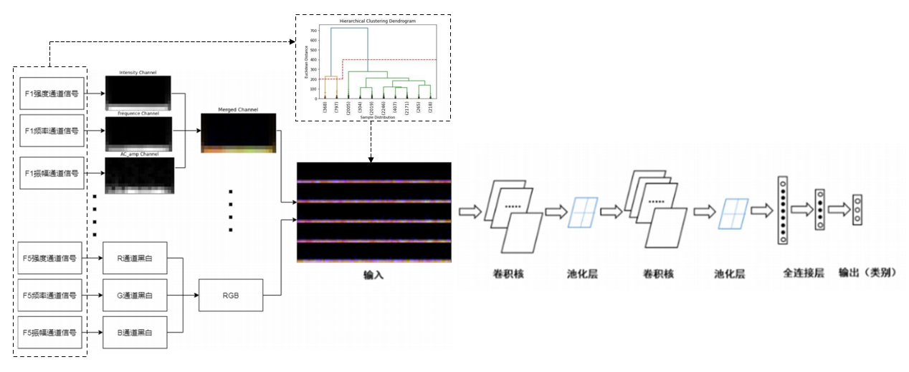
</p>
<p><span class="figure-number">Figure 1: </span>基于时频分析的火检稳定性判别卷积神经网络模型</p>
</div>

<p>
阶段1：利用 ABB 火检探头 SF810、火检分析单元 FAU810，并设计燃烧调整实验，采集表示不同火焰状态的火检中间值及给煤量变化情况。
</p>

<p>
阶段2：对采集到的表示火焰状态的火检中间值数据进行聚类分析，结合实际运行经验改进层次聚类树的状态划分方式后，将燃烧状态分为灭火、燃烧不稳定、燃烧稳定状态 3 类。
</p>

<p>
阶段3：建立基于时频分析的火检稳定性判别卷积神经网络模型，对火检中间值信号进行时频分析结合层次聚类划分所给定的对应标签进行学习训练，利用训练集和测试集分别验证模型对于不同状态分类的准确率。
</p>
</div>
<div id="outline-container-orgaeeaf53" class="outline-3">
<h3 id="orgaeeaf53"><span class="section-number-3">3.1</span> 层次聚类（HCA）</h3>
<div class="outline-text-3" id="text-3-1">
<p>
聚类是无监督学习的一种，是将相似的对象归到同一个类中，使得属于同一个类内的数据对象之间相似性尽可能大，同时保证不在同类中的数据对象之间差异性也尽可能地大。聚类同分类的根本区别在于分类是需要事先知道所依据的数据特征，而聚类是要找到这个数据特征，因此，在很多应用中，聚类分析作为一种数据预处理过程，是进一步分析和处理数据的基础。对于现场火检数据来说，在对燃烧状态变化过程不完全了解的情况下，要实现通过某种方法将状态尚不明确的样本进行不同状态的划分，就需要从获得的实际火焰检测数据归纳出一个合适的分类依据。
然而，对于典型的 K-Means 聚类、DBSCAN 密度聚类等方法来说，当分类数目具有实际运行意义时，很难得到新分离的状态之间明确的界限，或是新分离的状态之间的不连续跳变，不很好的保证各个燃烧状态内部相似度高、而燃烧状态间相似度低的聚类标准。而层次聚类本身是通过划分聚类树来获得不同的分类数的，此每增加一类划分数目都可以通过比较之前的划分情况找出新的划分之前的类，且可以根据实际的运行背景，对类别的划分进行调整。
</p>

<p>
层次聚类（Hierarchical Cluster Analysis, HCA） 是根据给定的簇间距离度量准则，构造和维护一棵由簇和子簇形成的聚类树，直至满足某个终结条件为止，即通过比较火检中间值向量之间的距离，并依靠距离大小关系构建一棵状态划分树。其次层次聚类的结果一般保存为一个可链接的矩阵，可以通过这个链接矩阵将聚类的结果表示成聚类树的形式，在聚类树中可以清楚的显示不同类别按照某种距离度量的划分过程。
根据层次分解是自底向上还是自顶向下形成，层次聚类方法可以分为凝聚的层次聚类和分裂的层次聚类。凝聚的层次聚类这种自底向上的策略首先将每个对象作为一个簇，然后合并这些原子簇为越来越大的簇，直到所有的对象都在一个簇中，或者某个终结条件被满足。分裂的层次聚类这种自顶向下的策略与凝聚的层次聚类相反，首先将所有对象置于一个簇中，然后逐步细分为越来越小的簇，直到每个对象自成一簇，或者达到了某个终结条件，例如达到了某个希望的簇数目，或者两个最近的簇之间的距离超过了某个阈值。
</p>

<p>
对于任意两个簇之间的距离度量，最小距离由两个燃烧状态中的最近的中间值向量获得，最大距离则由两个燃烧状态中最远的中间值向量获得，而平均距离由两个燃烧状态中所有特征向量共同获得。因为类平均距离法同时考虑了两个状态中所有样本点的分布情况，受到偶然误差值影响的概率通常来说很小，聚类的稳定性也就越高，结合火检中间值向量集合，本文使用类平均距离的度量方式。
</p>

<p>
在层次聚类算法中，以单个数据对象为初始簇，以最近簇相聚合的方法融合，直至得到期望的聚类数为止。假定有个对象要被聚类，其距离矩阵大小为N×N，凝聚的层次聚类方法的最小距离方法的基本过程如下：
</p>

<ol class="org-ol">
<li>将每一个数据对象视为一簇，每簇仅一个对象，计算它们之间距离，得到初始化距离矩阵；</li>

<li>将距离最近的力最小的两个簇合并成一个新的簇；</li>

<li>重新计算新的簇与所有其他簇之间的距离，即将新合并的簇与原有簇的距离中选择距离最小的值作为两个簇间的相似度；</li>

<li>重复第二步和第三步，直到所有簇最后合并成一个簇为止或者达到某个终止条件，如希望得到的簇的个数或者两个相近的簇超过了某一个阈值。</li>
</ol>

<p>
凝聚层次聚类的思想就是通过不断地计算各个中间值向量之间的距离，每一步都合并由距离度量方式得到的最近的两个类，最后整个数据集都合并至一类。这种聚类方法的优点就是可以根据得到链接矩阵，清楚的了解每一步中合并了哪 2 类，并且在聚类树图中能快速了解各个燃烧状态之间划分的距离高度，利于后续对所提取特征进行更深层的分析。
</p>
</div>
</div>
<div id="outline-container-orgac51102" class="outline-3">
<h3 id="orgac51102"><span class="section-number-3">3.2</span> 短时傅里叶(STFT)</h3>
<div class="outline-text-3" id="text-3-2">
<p>
区分于经典的信号相关分析、时域平均技术、傅里叶变换等时域分析技术和频域分析技术，时频分析方法结合了时域和频域分析的特点，既可以观察到信号在时域尺度上的特征，又可以同时分析频率成分随时间的变化。比较常用的时频分析方法包括STFT变换、小波变换、Gabor变换等。其中，短时傅立叶变换（STFT）是一种与傅立叶相关的变换，用于确定信号局部随时间变化的正弦频率和相位信息。实际上，用于计算 STFT 的过程是将较长时间的信号划分为等长的较短片段，然后分别在每个较短片段上计算傅立叶变换，揭示了每个较短时间片段上的频域信息。STFT 变换原理如图 2 所示。
</p>

<div class="figure">
<p>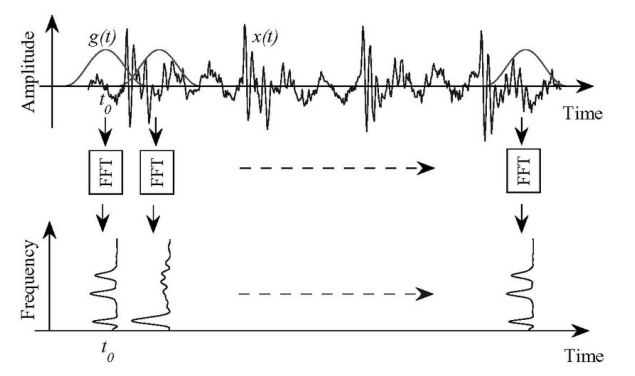
</p>
<p><span class="figure-number">Figure 2: </span>STFT 原理图</p>
</div>

<p>
STFT 的基本思想是在傅里叶变换的基础上，把待分析的信号乘以时窗函数，将原始信号划分成许多小的时间间隔，在窗口宽度足够窄的情况下认为每个时间间隔内的信号是平稳的，然后用傅里叶变换分析每一个时间间隔以确定该时间段内存在的频率，从而实现时频分析的目的。将时序信号经过 STFT 变换，在采样频率一定的条件下，变换后所得矩阵大小由窗口宽度及窗口之间的重叠度决定。本文时频变换选取的窗口宽度、窗口重叠率分别为 40、0.8。
</p>

<p>
通过将燃烧器所采集的三个中间物理量进行时频变化生成的灰度图以及将三个灰度图按照 R、G、B 三个色彩通道合成为一张时频图。时频图本质上是反映信号在不同时间和频率的能量强度的二维图，能从多个角度显示信号的细节变化，进而有效描述火检信号的特征。因此，可以利用 STFT 时频图作为表征燃烧状态的特征图，以实现对燃烧状态的识别。同时，为了突出信号的频域特征并且保留其随时间变化的信息，本文在短时傅里叶变换原理基础上，结合图像处理技术，提出新的时频特征提取方法代替原始信号用于表征燃烧状态。
</p>
</div>
</div>
<div id="outline-container-org16c5638" class="outline-3">
<h3 id="org16c5638"><span class="section-number-3">3.3</span> 卷积神经网络</h3>
<div class="outline-text-3" id="text-3-3">
<p>
卷积神经网络 (CNN) 是一种前馈神经网络，具有局部连接、权值共享等优点，被广泛地应用于与图像有关的任务。CNN 是一种在隐含层中应用卷积操作对图像进行处理的网络，它包含有卷积层、池化层和激活层等基本单元组成，通过逐层的卷积可以提取数据的低维简单特征和高维抽象特征，全连接层确定其特征量与所属类别的对应关系。通过多个隐含层的处理可以将输入图像转变为多维的特征子图，而这些特征图可以被应用于图像分类、语义分割等任务，可以提高模型的鲁棒性[24]。CNN 是一种含多个隐层的深度学习网络模型，能通过逐层的特征传递，将低层特征变换到高层特征，以实现特征的学习和表达[25]。与 BP 神经网络、SVM 等浅层网络相比，CNN 对复杂特征的学习表达能力更强，运算速度更快，避免了训练陷入局部极值等问题。卷积神经网络的结构如图 3 所示。
</p>

<div class="figure">
<p>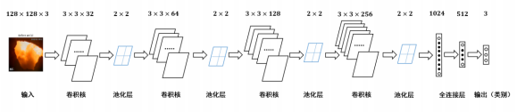
</p>
<p><span class="figure-number">Figure 3: </span>网络结构示意图</p>
</div>

<p>
卷积神经网络由两层卷积层及三层全连接层构成，网络的具体参数见表 1 。
</p>
<table border="2" cellspacing="0" cellpadding="6" rules="groups" frame="hsides">
<caption class="t-above"><span class="table-number">Table 1:</span> 卷积神经网络各层参数</caption>

<colgroup>
<col  class="org-left" />

<col  class="org-left" />
</colgroup>
<thead>
<tr>
<th scope="col" class="org-left">网络各层</th>
<th scope="col" class="org-left">参数</th>
</tr>
</thead>
<tbody>
<tr>
<td class="org-left">(conv1)</td>
<td class="org-left">Conv2d(3, 32,kernelsize=(3,2), stride=(2,2), padding=(0,1))</td>
</tr>

<tr>
<td class="org-left">(conv2)</td>
<td class="org-left">Conv2d(32, 64, kernelsize=(2,2), stride=(2,1), padding=(0,1))</td>
</tr>

<tr>
<td class="org-left">(fc1)</td>
<td class="org-left">Linear(infeatures=512, outfeatures=200, bias=True)</td>
</tr>

<tr>
<td class="org-left">(fc2)</td>
<td class="org-left">Linear(infeatures=200, outfeatures=50, bias=True)</td>
</tr>

<tr>
<td class="org-left">(fc3)</td>
<td class="org-left">Linear(infeatures=50, outfeatures=3, bias=True)</td>
</tr>
</tbody>
</table>
</div>
</div>
</div>
<div id="outline-container-org9479693" class="outline-2">
<h2 id="org9479693"><span class="section-number-2">4</span> 试验装置与数据集构建</h2>
<div class="outline-text-2" id="text-4">
</div>
<div id="outline-container-orge6b1d34" class="outline-3">
<h3 id="orge6b1d34"><span class="section-number-3">4.1</span> 实验装置</h3>
<div class="outline-text-3" id="text-4-1">
<p>
为方便采集煤粉燃烧过程的相关参数，本文设计了一套煤粉燃烧过程数据采集系统，并在某 660MW 前后墙对冲锅炉上进行了安装。该煤粉燃烧调整实验的数据采集系统主要包括 ABB 公司火检探头 SF810、火检分析单元 FAU810 以及MOXA 交换机和 PC。5 只 SF810 火检探头安装在锅炉炉膛 F 层 5 只燃烧器附近，并通过双绞线将火检信号传送给位于电子间的火检分析单元 FAU810，所有的火检中间值信号由计算机通过 MODBUS 协议经交换机实时并行采集。数据采集系统具体连接如图 4 所示。
</p>


<div class="figure">
<p>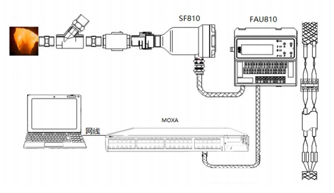
</p>
<p><span class="figure-number">Figure 4: </span>数据采集系统示意图</p>
</div>

<p>
电站实际运行中，火焰燃烧稳定性指标由 ABB 公司火检分析单元 FAU810 根据火检探头 SF810 采集的火检中间值计算得出。
</p>
</div>
</div>
<div id="outline-container-orga0b94d1" class="outline-3">
<h3 id="orga0b94d1"><span class="section-number-3">4.2</span> 燃烧调整实验</h3>
<div class="outline-text-3" id="text-4-2">
<p>
为了研究煤粉燃烧火焰稳定性，在某 660MW 机组的前后墙对冲锅炉 F 层燃烧器进行了燃烧调整实验，采集了实验前后八个小时（2018 年 9 月 9 日 9:00 至 17:00）的火检数据（对应 F 层 1-5 号燃烧器）和给煤量数据。在该过程中同步采集 5 只燃烧器火检中间值及给煤量变化情况。煤粉燃烧调整实验中采集的 3 号火检探头的部分火检中间值数据如表 2-1 所示。
以每秒 10 次的频率采集炉膛火检中间值信号，包括火焰的燃烧强度、闪烁频率和 AC-振幅三个中间变量和燃烧稳定性指标值。其中，燃烧稳定性指标值由 ABB 公司提供的火检分析单元（FAU810）依据三个中间变量计算得出。同时，采集该实验过程中给煤量变化的情况，时间间隔为 1 秒。故每秒火检中间值取 10 次，给煤量取 1 次。选取实验数据的时间区间为 13:00~16:00，共 3 个小时。
</p>
<table border="2" cellspacing="0" cellpadding="6" rules="groups" frame="hsides">
<caption class="t-above"><span class="table-number">Table 2:</span> 电厂 1 号机组 F 层 3 号燃烧器火检中间值</caption>

<colgroup>
<col  class="org-left" />

<col  class="org-right" />

<col  class="org-right" />

<col  class="org-right" />

<col  class="org-right" />
</colgroup>
<thead>
<tr>
<th scope="col" class="org-left">时间</th>
<th scope="col" class="org-right">燃烧强度</th>
<th scope="col" class="org-right">闪烁频率</th>
<th scope="col" class="org-right">AC-振幅</th>
<th scope="col" class="org-right">燃烧指标</th>
</tr>
</thead>
<tbody>
<tr>
<td class="org-left">2018-09-09 13:00:00.000</td>
<td class="org-right">81</td>
<td class="org-right">7</td>
<td class="org-right">2</td>
<td class="org-right">63</td>
</tr>

<tr>
<td class="org-left">2018-09-09 13:00:00.100</td>
<td class="org-right">80</td>
<td class="org-right">7</td>
<td class="org-right">2</td>
<td class="org-right">62</td>
</tr>

<tr>
<td class="org-left">2018-09-09 13:00:00.200</td>
<td class="org-right">80</td>
<td class="org-right">7</td>
<td class="org-right">1</td>
<td class="org-right">62</td>
</tr>

<tr>
<td class="org-left">&#x2026;</td>
<td class="org-right">&#x2026;</td>
<td class="org-right">&#x2026;</td>
<td class="org-right">&#x2026;</td>
<td class="org-right">&#x2026;</td>
</tr>

<tr>
<td class="org-left">2018-09-09 13:00:00.200</td>
<td class="org-right">75</td>
<td class="org-right">9</td>
<td class="org-right">2</td>
<td class="org-right">94</td>
</tr>

<tr>
<td class="org-left">2018-09-09 15:59:59.800</td>
<td class="org-right">76</td>
<td class="org-right">9</td>
<td class="org-right">2</td>
<td class="org-right">93</td>
</tr>

<tr>
<td class="org-left">2018-09-09 15:59:59.900</td>
<td class="org-right">75</td>
<td class="org-right">9</td>
<td class="org-right">2</td>
<td class="org-right">93</td>
</tr>
</tbody>
</table>

<p>
煤粉燃烧调整实验中的火检信号中间值变化如图 5 所示，图 6 为煤粉燃烧调整实验中对应的给煤量变化。
</p>


<div class="figure">
<p>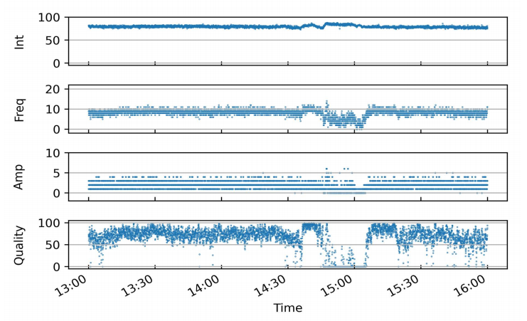
</p>
<p><span class="figure-number">Figure 5: </span>13:00-16:00 燃烧中间值及燃烧指标</p>
</div>


<div class="figure">
<p>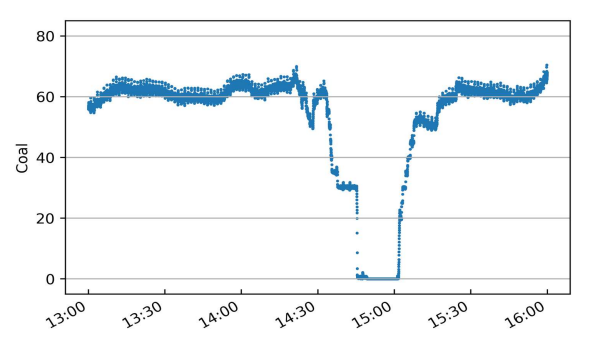
</p>
<p><span class="figure-number">Figure 6: </span>13:00-16:00 给煤量变化图</p>
</div>
</div>
</div>
</div>

<div id="outline-container-org856f368" class="outline-2">
<h2 id="org856f368"><span class="section-number-2">5</span> 实验结果与讨论</h2>
<div class="outline-text-2" id="text-5">
</div>
<div id="outline-container-orgbf4bcbc" class="outline-3">
<h3 id="orgbf4bcbc"><span class="section-number-3">5.1</span> 层次聚类结果</h3>
<div class="outline-text-3" id="text-5-1">
<p>
本实验中将采用层次聚类中自下而上聚合的方式（AGNES），各类之间的距离计算采用类平均法，对三个火检中间值利用层次聚类得到聚类树，通过将聚类树做不同的划分，将燃烧状态分为指定的任意多类别。
如图 7 所示是将燃烧中间值经行层次聚类得到的聚类树。该聚类树表示了在凝聚层次聚类过程中，将最后的 10 类合并到 1 类的过程，其中横坐标标表示各个类中样本数量，纵坐标表示的是聚合过程中不同类之间的欧式距离。图 8 表示的是给煤量变化趋势图和通过层次聚类给定燃烧状态标签的结果。
</p>

<div class="figure">
<p>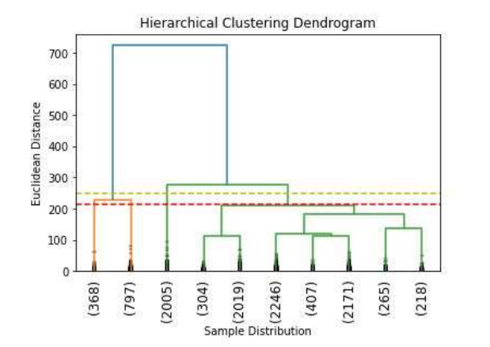
</p>
<p><span class="figure-number">Figure 7: </span>层次聚类树状图</p>
</div>


<div class="figure">
<p>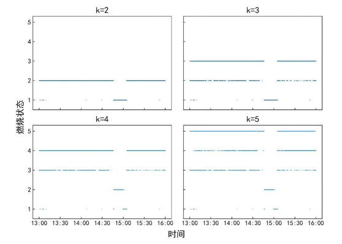
</p>
<p><span class="figure-number">Figure 8: </span>层次聚类标签值</p>
</div>

<p>
如图 8 所示，当聚类结果的分类数为 2 时燃烧状态划分比较理想，这与实际的给煤量情况相符，分为灭火和燃烧两个状态。而当聚类数增加时，新的子状态之间出现出现不连续跳变，且划分界限逐渐不明确，显然不能满足对状态检测的要求。
故在对层次聚类树进行划分时，结合实际的运行经验对燃烧状态的划分方式进行调整，从而使燃烧状态的划分既能满足聚类所依据的状态之间距离大小的关系，还能符合实际给煤量变化所反映的燃烧状态变化情况。图 9 是将实际运行经验与层次聚类树结合起来对燃烧状态划分的结果图。图 10 给出了采用新的聚类树划分方法所得的聚类标签及对应的给煤量变化情况。
</p>

<div class="figure">
<p>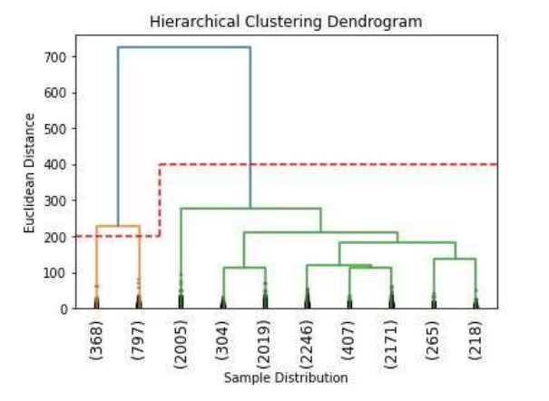
</p>
<p><span class="figure-number">Figure 9: </span>结合运行经验对层次聚类树进行划分</p>
</div>


<div class="figure">
<p>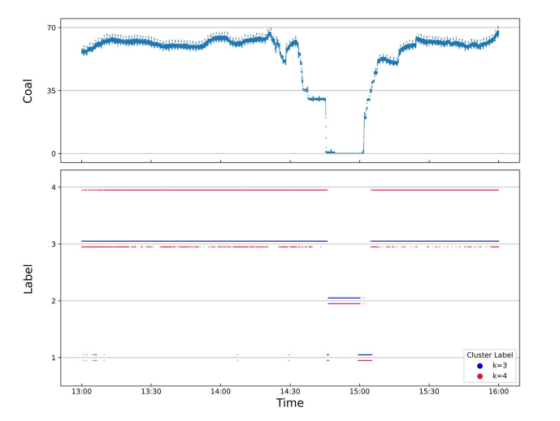
</p>
<p><span class="figure-number">Figure 10: </span>新提出的划分方式对应的标签分布</p>
</div>

<p>
利用聚类树划分与实际运行经验相结合的方式来处理燃烧状态类别的划分，聚类数目由 2 增至 3 时，表示燃烧的状态划分“忽视”掉，直接跳转到聚类数目由 3 增至 4 时出现的新划分上，将原来聚类数目为 4 时，标签值中为 3 和 4 的样本合为了一类，而其它类样本标签保持不变。从而将原先灭火状态划分为不稳定燃烧及灭火，更符合实际运行情况。采用层次聚类方式对火焰中间值聚类得到的状态划分不宜太多，但考虑到电厂锅炉运行中该状态指标的实际意义，状态的划分又不宜太少，故取聚类数目为 3 相对来说比较合适，3 个类分别代表灭火、不稳定燃烧和稳定燃烧。
</p>

<p>
由层次聚类方法划分聚类树得到的燃烧状态标签分析可得出，虽然在划分数目增加时，有些状态的重新划分导致了前面提到的状态标签跳变的情况，但是可以通过聚类树简单的找到产生问题的划分，并通过结合实际运行经验重新对燃烧状态进行划分，最后使得聚类的标签之间不仅具有良好分辨性，而且能很好的反映实际工况下给煤量的变化情况，因此选用层次聚类算法作为判定炉膛火焰燃烧的聚类方法是可行的。
</p>
</div>
</div>
<div id="outline-container-org5833833" class="outline-3">
<h3 id="org5833833"><span class="section-number-3">5.2</span> 基于时频分析的火检稳定性判别卷积神经网络模型</h3>
<div class="outline-text-3" id="text-5-2">
<p>
本实验将发电厂 1 号机组 F 层 5 只燃烧器（F1-F5）对应时段的火检中间值作时频变换。采样时间区间为 13:00-16:00。每只燃烧器采样数据都包括了 3 个火检中间值（强度、频率和振幅），对于每一只燃烧器，三个特征量的时频图正好对应于一张 RGB 图片的三个通道，由此，将每一只燃烧器所得的三个特征量时频图进行通道合并生成一张 RGB 图像，这 15 维特征量代表着任一时刻炉膛火焰燃烧的状态，将每一个特征量的时间序列信号分别进行短时傅里叶变换转换成对应的时频图。然后将 5 只燃烧器的时频图按照固定的时间间隔进行切片，堆叠成一张 3 × 65 × 10 的图片，一张图片代表时间长度为 10 秒的燃烧状态。具体流程如图 12 所示。对于所生成的时频图像数据集标签的给定结合上一章中层次聚类的结果，以及实际的运行经验和给煤量变化，对层次聚类结果进行重新划分，得到对应样本的标签值。
</p>

<div class="figure">
<p>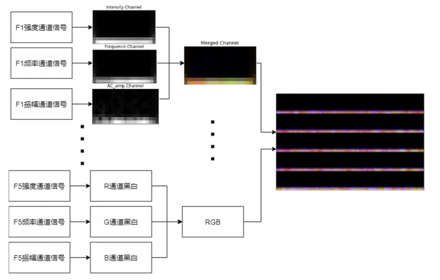
</p>
<p><span class="figure-number">Figure 11: </span>火检数据处理流程图</p>
</div>

<p>
原始数据集一共 1080 张时频图，将 14:55 时刻之后的时频图作为训练集，其中包含图像 390 张；14:55 时刻之前的时频图作为测试集，包含图像 690 张。首先，在不考虑样本中各种燃烧状态数量不平衡对神经网络训练的影响下，利用训练集样本对神经网络可学习参数进行训练。在进行 200 轮训练后保存模型及参数，之后固定模型参数，将测试集样本输入到网络中，得到网络输出值，计算与实际标签值之间的准确率。与以给煤量多少作为判断炉膛火焰燃烧状态的方式做对比，画出对应的混淆矩阵，结果如图 13 所示，其中状态标签 Stat<sub>0</sub>、Stat<sub>1</sub>、Stat<sub>2</sub> 分别对应着灭火、燃烧不稳定、燃烧稳定 3 个状态。图 a) 是参考以给煤量多少作为判断炉膛火焰燃烧状态情况下，将测试集输入训练好的网络中得到的混淆矩阵；图 b) 是由火检中间值进行层次聚类得到的燃烧状态标签作为反应炉膛火焰燃烧状态的情况下，将测试集输入至训练好的网络模型中得到的混淆矩阵。
</p>

<div class="figure">
<p>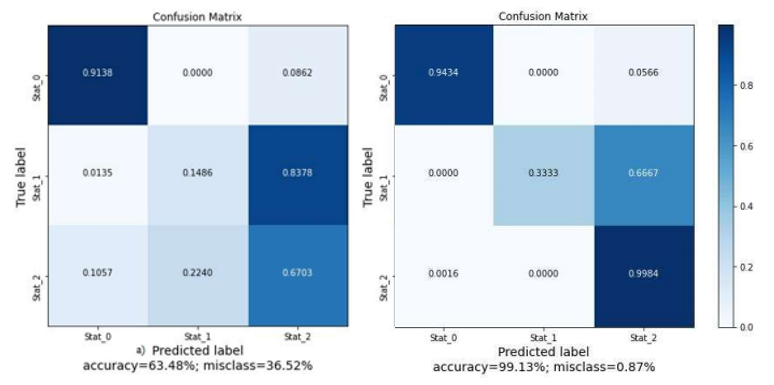
</p>
<p><span class="figure-number">Figure 12: </span>测试集的识别混淆矩阵</p>
</div>

<p>
由图可知，本文方法对测试集的识别准确率为99.13%，明显高于以给煤量多少划分的方法的63.48%，更符合实际运行情况。下面将各自的训练集再次输入到网络中，验证已经训练好的网络在训练集上的准确率，混淆矩阵结果如图 14 所示。
</p>

<div class="figure">
<p>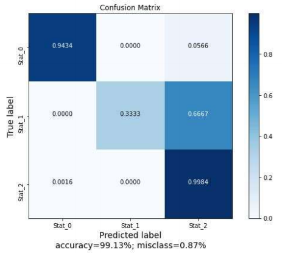
</p>
<p><span class="figure-number">Figure 13: </span>训练集的识别混淆矩阵</p>
</div>

<p>
可以看到，各自的训练准确率都和实际训练过程的结果相符合，都能准确的识别训练集中不同燃烧状态。
如图 4-9 所示，给出了两种不同标签给定方式下，就同一网络结构训练过程中的损失函数值及准确率的变化情况。
</p>

<div class="figure">
<p>
</p>
<p><span class="figure-number">Figure 14: </span>训练过程中的损失及准确率</p>
</div>

<p>
训练过程中损失函数值的变化可以看出，在使用了超采样方法后，两次训练的过程中，模型的损失函数值下降的更迅速了，也即是表示模型收敛速度加快了。这是过采样处理对于非平衡样本集训练的优势。由神经网络训练过程中的损失、准确率变化情况及混淆矩阵可以看出，所提出的基于时频分析的火焰稳定性判别 CNN 模型在由火检中间值生成的时频图准确率高、收敛迅速。综上所述，所提出的基于火检中间信号变换时频图的火焰稳定性判断 CNN 模型在燃烧状态的判断上具有良好的准确率。
</p>
</div>
</div>
</div>
<div id="outline-container-org8d42bb9" class="outline-2">
<h2 id="org8d42bb9"><span class="section-number-2">6</span> 结论</h2>
<div class="outline-text-2" id="text-6">
<p>
通过层次聚类的结果及聚类树的划分过程，提出了利用给煤量变化情况和结合实际运行人员经验，重新划分聚类树的方法。最后，在改进层次聚类树的状态划分方式后，将燃烧状态分为了 3 类，分别为灭火、燃烧不稳定及燃烧稳定状态。通过时频分析及建立火焰稳定性判别的卷积神经网络模型，对火检数据生成的反映燃烧状态变化的时频图进行训练学习，并利用训练集和测试集分别来验证了卷积网络模型对于不同状态分类的准确率。最终，卷积神经网络模型的识别准确率在由层次聚类划分标签的结果中达到了 99.13%，验证了所提出的基于时频分析及卷积神经网络火焰稳定性判别模型的可行性。综上，基于时频分析的火焰稳定性判别卷积神经网络模型对于实际的燃烧稳定性检测具有一定的参考意义。
</p>
</div>
</div>
<div id="outline-container-org5cc9900" class="outline-2">
<h2 id="org5cc9900"><span class="section-number-2">7</span> 参考文献</h2>
<div class="outline-text-2" id="text-7">
<p>
[1] 刘伟, 司风琪, 徐治皋. 基于燃烧特征量和模糊 C 均值聚类的燃烧诊断[J]. 东南大学学报(自然科学版), 2012, 42(增刊 2): 326-330.
    LIU Wei, SI Fengqi, XU Zhigao. Combustion diagnosis based on combustion feature and fuzzy C-meansclustering[J]. Journal of Southeast University (NaturalScience Edition), 2012, 42(Suppl.2): 326-330.
</p>

<p>
[2] 肖隽, 王一清, 吕震中. 基于炉膛微压信号的锅炉燃烧诊断试验研究[J]. 锅炉技术, 2002, 33(7): 12-15.
    XIAO Jun, WANG Yiqing, LU Zhenzhong. Experimental research of diagnosing boiler combustion condition using furnace micro-pressure[J]. Boiler Technology, 2002, 33(7): 12-15.
</p>

<p>
[3] 高翔, 骆仲泱, 陈亚非等. 应用微压探测诊断燃烧状况的试验研究[J]. 动力工程, 1998, 18(4): 27-31.
    GAO Xiang, LUO Zhongyang, CHEN Yafei, et al. Experimental study on the combustion diagnosis using micro-pressure monitoring[J]. Power Engineering, 1998, 18(4): 27-31(in Chinese).
</p>

<p>
[4] HERNÁNDEZ R, BALLESTER J. Flame imaging as a diagnostic tool for industrial combustion[J]. Combustion and Flame, 2008, 155(3): 509-528.
</p>

<p>
[5] LUO Z, ZHOU H C. A combustion-monitoring system with 3-D temperature reconstruction based on flameimage processing technique[J]. IEEE Transactions on Instrumentation and Measurement, 2007, 56(5): 1877-1882.
</p>

<p>
[6] YAN Y, LU G, COLECHIN M. Monitoring and characteri-zation of pulverized coal flames using digital imaging techniques[J]. Fuel, 2002, 81(5): 647-656.
</p>

<p>
[7] SU S, POHL J H, HOLCOMBE D, et al. Techniques to Determine Ignition, Flame Stability and Burnout of Blended Coals in p.f. Power Station Boilers[J]. Progress in Energy and Combustion Science, 2001, 27(1): 75–98.
</p>

<p>
[8] CANDEL S. Combustion Dynamics and Control: Progress and Challenges[J]. Proceedings of the Combustion Institute, 2002, 29(1): 1–28.
</p>

<p>
[9] WU Y, LU Y, AL-RAHBI I S, et al. Prediction of the liftoff, blowout and blow off stability limits of pure hydrogen and hydrogen/hydrocarbon mixture jet flames[J]. International Journal of Hydrogen Energy, 2009, 34(14): 5940–5945.
</p>

<p>
[10] LEE J G, SANTAVICCA D A. Experimental diagnostics for the study of combustion instabilities in lean premixed combustors[J]. Journal of Propulsion and Power, 2003, 19(5): 735–750.
</p>

<p>
[11] PAUBEL X, CESSOU A, HONORE D, 等. A flame stability diagram for piloted non-premixed oxycombustion of low calorific residual gases[J]. Proceedings of the Combustion Institute, 2007, 31(2): 3385–3392.
</p>

<p>
[12] KIRAN D Y, MISHRA D P. Experimental studies of flame stability and emission characteristics of simple LPG jet diffusion flame[J]. Fuel, 2007, 86(10): 1545–1551.
</p>

<p>
[13] SHIMODA M, SUGANO A, KIMURA T, et al. Prediction Method of Unburnt Carbon for Coal Fired Utility Boiler Using Image Processing Technique of Combustion Flame[J]. IEEE Transactions on Energy Conversion, 1990, 5(4): 640–645.
</p>

<p>
[14] HUANG Y, YAN Y, LU G, et al. On-Line Flicker Measurement of Gaseous Flames by Image Processing and Spectral Analysis[J]. Measurement Science and Technology, 1999, 10(8): 726–733.
</p>

<p>
[15] 韩义于, 王研凯. 燃煤机组最小边界出力稳定性评价方法分析[J]. 电力与能源, 2021, 42(01): 106–109.
</p>

<p>
[16] WANG Z, SONG C, CHEN T. Deep Learning Based Monitoring of Furnace Combustion State and Measurement of Heat Release Rate[J]. Energy, 2017, 131: 106–112.
</p>

<p>
[17] Li W., Wang D., Chai T. Flame Image-Based Burning State Recognition for Sintering Process of Rotary Kiln Using Heterogeneous Features and Fuzzy Integral[J]. IEEE Transactions on Industrial Informatics, 2012, 8(4):780-790.
</p>

<p>
[18] Chen J., Hsu T. Y., Chen C. C., et al. Monitoring combustion systems using HMM probabilistic reasoning in dynamic flame images[J]. Applied Energy, 2010, 87(7):2169-2179.
</p>

<p>
[19] 谭丞, 徐立军, 曹章.  煤燃烧过程监测与诊断技术的发展与应用[J]工程研究, 2009, 1(2): 111-118. 
     Tan Cheng, Xu Lijun, Cao Zhang. The state-of-art of monitoring and diagnosis techniques of coal combustion[J]. Journal of Engineering Studies,2009, 1(2): 111-118(in Chinese). 
</p>

<p>
[20] 张玉杰, 刘芳, 齐忆南. 基于神经网络的电站锅炉燃烧诊断方法研究[J]. 西安石油大学学报(自然科学版), 2007, 22(5): 103-106.
     ZHANG Yujie, LIU Fang, QI Yinan. Study on the combustion diagnosis method of power-station boilers based on neural network[J]. Journal of Xi’an Shiyou University (Natural Science Edition), 2007, 22(5): 103-106.
</p>

<p>
[21] 许可.  卷积神经网络在图像识别的应用的研究[D].  杭州: 浙江大学, 2012．
</p>

<p>
[22] ABDEL-HAMID O, MOHAMED A Ｒ, JIANG H． Convolutional neural networks for speech recognition[J]. IEEE/ACM Transactions on Audio, Speech, and Language Processing, 2014,  22(10): 1533-1545．
</p>

<p>
[23] LIU M Y, LI S X, SHAN S G, et al． AU-inspired deep networks for facial expression feature learning[J]. Neurocomputing, 2015, 159(8): 126-136．
</p>

<p>
[24] Wang Z., Song C., Chen T. Deep learning based monitoring of furnace combustion state and measurement of heat release rate[J]. Energy, 2017, 131:106-112.
</p>

<p>
[25] SUN J, CAO W F, XU Z B. Learning a convolutional neural network for non-uniform motion blur removal[J]. CVPR 2015, 2015, 10(5): 48-56．
</p>
</div>
</div>
</div>
<div id="postamble" class="status">
<p class="date">Created: 2021-07-14 周三 08:08</p>
<p class="validation"><a href="http://validator.w3.org/check?uri=referer">Validate</a></p>
</div>
</body>
</html>
